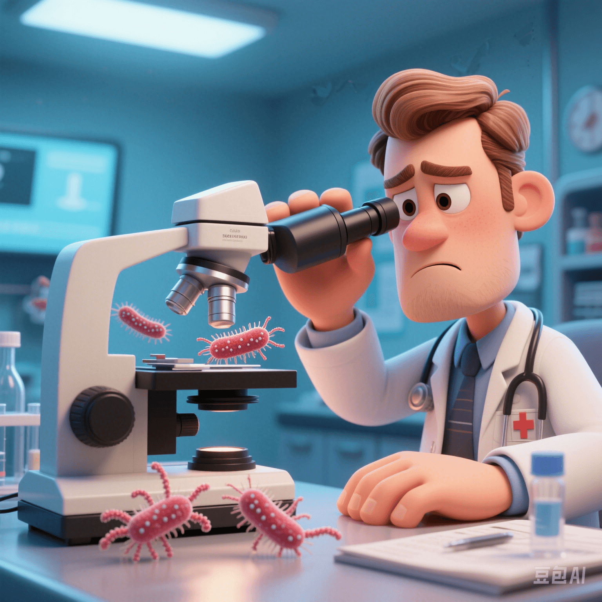

The Antibiotic Resistance Crisis of Sexually Transmitted Diseases: The Threat of Superbugs
PeaceLove.Top Insights :2025-04-13
In recent years, the health risks posed by sexually transmitted diseases (STDs) are not limited to traditional infection problems. With the rise of antibiotic - resistant strains, the antibiotic resistance crisis has gradually become one of the important challenges in global public health. In particular, the super - strains of gonorrhea have a resistance rate of up to 78% to commonly used antibiotics, which has extremely worried experts.
🦠 The Rise of Superbugs: The Antibiotic Resistance Problem of Gonorrhea
1️⃣ The Antibiotic Resistance Crisis of Gonorrhea
According to the global monitoring data of the World Health Organization (WHO), the super - strains of gonorrhea have shown significant resistance to traditional treatment drugs (such as cephalosporins). **78%** of gonorrhea strains can no longer be effectively cleared by conventional antibiotics, which means that traditional drug treatments are no longer able to deal with these resistant pathogens. This antibiotic resistance greatly increases the complexity of the infection. If effective measures are not taken, super - strains may lead to long - term health problems and even incurable infections.
⚠️ Reasons for the Spread of Antibiotic Resistance: Overuse of Antibiotics
2️⃣ Consequences of Antibiotic Abuse
The abuse of antibiotics in medical treatment is one of the main reasons for the deterioration of the antibiotic resistance problem. Especially in the treatment of some STDs, some patients do not complete the treatment course as prescribed by the doctor or adjust the drug dosage on their own, which causes bacteria to gradually develop resistance to the drugs. In addition, some uncontrolled drug use, such as the abuse of antibiotics without a prescription, further accelerates the spread of drug - resistant bacteria.
💉 Countermeasures: More Powerful Response Strategies
3️⃣ Developing New Antibiotics
Currently, the medical community is committed to researching and developing new antibiotics to combat antibiotic - resistant STDs such as gonorrhea. Scientists need to accelerate the pace of drug research and development to find new treatment methods that can break through antibiotic resistance. The emergence of a new generation of antibiotics will be the key to dealing with this crisis.
4️⃣ Promoting Preventive Measures: Protecting Yourself Means Protecting Others
Preventing the spread of STDs is an important means to reduce the risk of antibiotic resistance. Measures such as using condoms, avoiding unsafe sexual behavior, and having regular health checks can effectively prevent the spread of STDs. 💪
5️⃣ Enhancing Public Awareness
It is particularly important to improve public awareness of antibiotic - resistant STDs. Through education and publicity, more people can understand the potential hazards of STDs and the serious consequences of antibiotic resistance, and help people establish correct concepts of treatment and prevention.
🧠 Conclusion: Fighting Antibiotic Resistance Requires Global Cooperation
The threat of antibiotic - resistant superbugs is a common challenge faced by the global health field. In the face of this problem, countries must strengthen cooperation, promote the standardization of global antibiotic use, and increase investment in the research and development of new drugs. At the same time, the public should be more vigilant, take preventive measures, and maintain a healthy lifestyle to jointly deal with this increasingly serious public health problem. Let's work together to fight the antibiotic resistance crisis of STDs and protect our future and health! 🌍💪